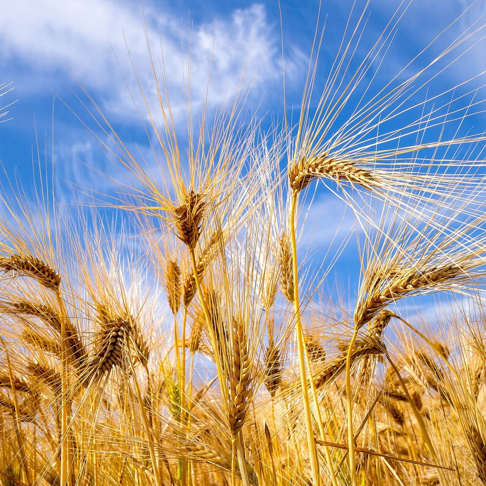
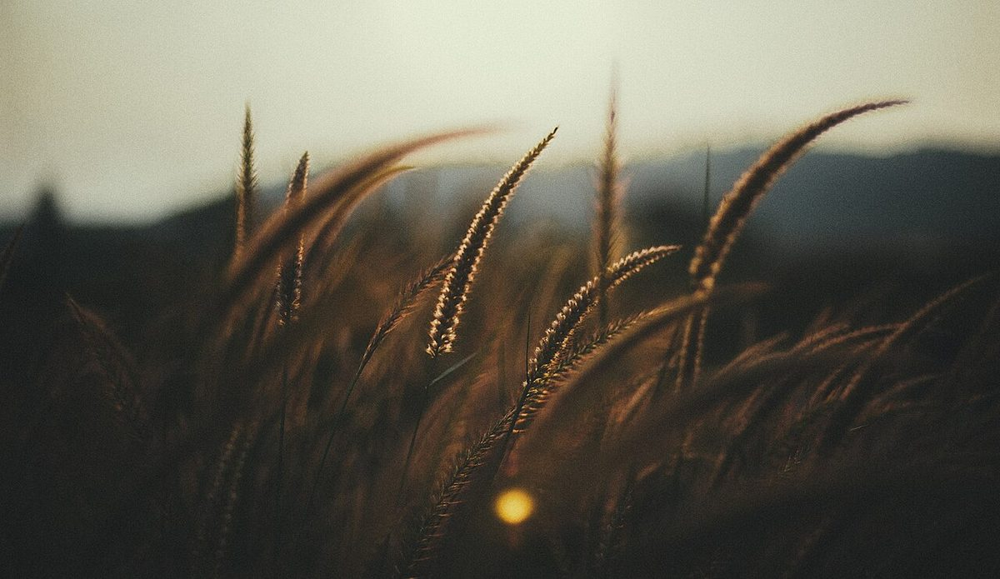

このページのコンセプトは制作側の案です。お店の理念や店名の意味を示すものではありません。
制作側の案「黒板の前の、小麦色のひと休み」
このサイトのデザインは、黒板をモチーフにした制作側の案です(実際のお店の様子ではありません)。暗い黒板の色と、粉をふったような明るい色を、交互に重ねています。
ページ内に丸い写真や丸いボタンが多いのは、店名の表記から連想した、デザイン上の約束事です。店名の意味やお店の考え方を解釈したものではありません。
お店の考え方やこだわりなどは、お店からお聞きできていないため掲載していません。
基本情報
| 店名 | 自家製天然酵母のパン MARU |
|---|---|
| 所在地 | 茨城県日立市相田町3丁目27-4 |
| 電話 | 0294-77-3137 |
| @marupan_1113 | |
| 営業時間 | 準備中(お問い合わせください) |
| 定休日 | 準備中(お問い合わせください) |
| スタッフ | 準備中(お問い合わせください) |


写真はフリー素材のイメージです。店舗の実際の様子ではありません。
お問い合わせは、お電話かInstagramで
営業時間・メニューなどの詳しい内容は、お電話またはInstagramでご確認ください。